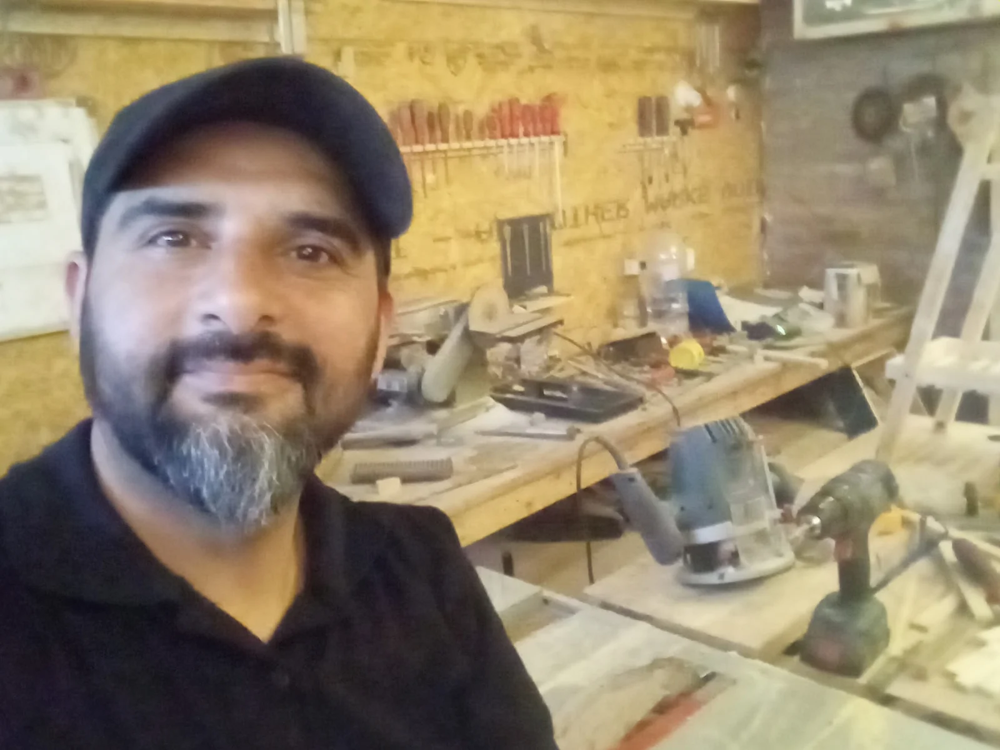

NUESTRA ESPECIALIDAD
Cocinas a medida
Bajomesadas, alacenas y soluciones de guardado para que cada cosa encuentre su lugar y tu cocina funcione a tu manera.
Pensemos tu cocinaUN OFICIO. INFINITAS POSIBILIDADES.
Cocinas y muebles a medida en Rosario y Villa Gobernador Gálvez, pensados para tu espacio y hechos en el taller de Alberto.
20 años haciendo carpintería.
El mismo gusto por hacer las cosas bien.
01 — LO QUE HACEMOS
Diseñamos a partir de tu espacio,
tus necesidades y tu manera
de vivirlo cada día.
Bajomesadas, alacenas y soluciones de guardado para que cada cosa encuentre su lugar y tu cocina funcione a tu manera.
Pensemos tu cocinaEse mueble que necesitás, con las medidas y la distribución que tu casa pide. Contanos tu idea y vemos cómo hacerla realidad.
Contanos qué imaginásMedición, presupuesto, fabricación e instalación. Un proceso para acompañar tu proyecto desde la primera charla.
Conocé el procesoTrabajamos principalmente con MDF. El material y la terminación se definen según tu proyecto.
02 — TRABAJOS CON HISTORIA
Cocinas, guardado y detalles a medida.
Cada trabajo, con su propio detalle.
Mostrando 5 trabajos.

AÑOS DE
CARPINTERÍA
ALBERTO / EL OFICIO DETRÁS DE MAORO
03 — DETRÁS DE CADA MUEBLE
Hace 20 años que la carpintería forma parte de mi vida. Es un oficio que disfruto: imaginar algo, darle forma y verlo encontrar su lugar en una casa.
En Maoro hago muebles a medida y me dedico especialmente a las cocinas. Trabajo principalmente con MDF, desde la primera idea hasta la fabricación y la instalación.
Me contás lo que necesitás.
Y empezamos a darle forma.
04 — ASÍ TRABAJAMOS
Un paso a la vez.
Con las cosas claras desde el principio.
Escribinos por WhatsApp. Si tenés fotos, referencias o medidas aproximadas, podés compartirlas.
Coordinamos la medición, definimos el mueble y preparamos el presupuesto de tu proyecto.
Con el presupuesto acordado y el 50% de seña, comienza la fabricación de tu mueble.
Coordinamos la entrega y la instalación. El 50% restante se abona al finalizar.
Hecho con oficio.
Con las cosas claras.
Contanos qué mueble necesitás y en qué zona estás. Si tenés una foto del espacio, medidas aproximadas o alguna referencia, podés enviarlas por WhatsApp para empezar a conversar.
Sí. Realizamos mediciones, entregas e instalaciones en Rosario y Villa Gobernador Gálvez. Pasanos tu ubicación al consultar para coordinar el proyecto.
Trabajamos principalmente con MDF. El material y la terminación se conversan según el mueble y las necesidades de cada proyecto.
Se abona el 50% al comenzar y el 50% al finalizar. Los trabajos tienen 6 meses de garantía. Los medios de pago y los detalles se acuerdan al presupuestar.
El plazo depende del proyecto y de la disponibilidad del taller. Lo conversamos al preparar tu presupuesto para que conozcas los tiempos antes de comenzar.
05 — TU IDEA EMPIEZA ACÁ
Una cocina más práctica. Un rincón mejor aprovechado. Ese mueble que no encontrás.
Contanos qué tenés en mente.
España 6321
Rosario y Villa Gobernador Gálvez
Lunes a viernes: 7:00 a 16:00 h
Sábados: hasta el mediodía
Completá estos datos y seguimos la charla por WhatsApp.